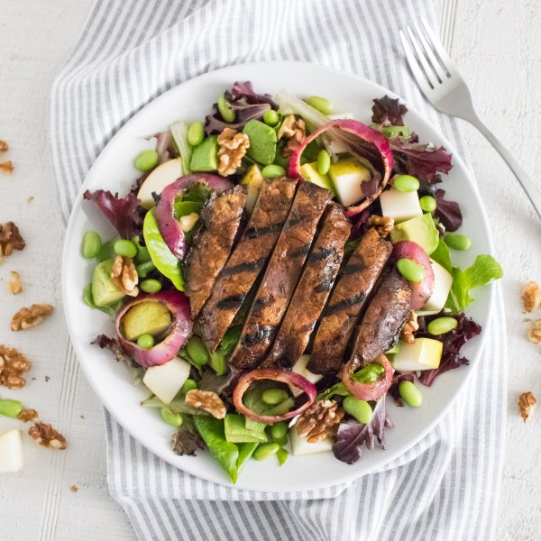

Balsamic Portobello Salad with Pear, Edamame, Walnuts & Avocado

Nutrition (per serving)
688.5 kcalCalories
22.7 gProtein
48.6 gCarbs
49.8 gFat
Full nutrition table
| Calories | 688.5 kcal |
| Total fat | 49.8 g |
| Saturated fat | 6.2 g |
| Trans fat | 0 g |
| Cholesterol | 0 mg |
| Sodium | 50 mg |
| Carbohydrates | 48.6 g |
| Fiber | 20.1 g |
| Sugars | 19.6 g |
| Protein | 22.7 g |
| Potassium | 1640.1 mg |
| Calcium | 154.3 mg |
| Iron | 5 mg |
| Vitamin A | 433 IU |
| Vitamin C | 28.8 mg |
| Vitamin D | 8.4 IU |
Cookware
Ingredients
- 2avocados
- 2 cupsedamame
- 2 clovesgarlic
- ¼ cupnutritional yeast flakes
- 2pears
- 4 capsportobello mushrooms
- 1 mediumred onion
- 2 (5 oz) pkgsspring mix (mixed greens)
- 1 cupwalnuts
- apple cider vinegar
- balsamic vinegar
- black pepper
- Dijon mustard
- extra virgin olive oil
- pure maple syrup
- salt
Steps
- Wash and dry the fresh produce. (Skip the mixed greens if they came pre-washed.)4 caps portobello mushrooms
2 pears
2 (5 oz) pkgs spring mix (mixed greens)
2 avocados - Place frozen edamame in a medium bowl, cover with hot water (from the tap), and let sit 5 minutes. Drain in a colander; set aside to drain further.2 cups edamame
- Peel and mince garlic.2 cloves garlic
- In a large salad bowl, whisk together garlic, nutritional yeast, oil, vinegar, maple syrup, Dijon, salt, and pepper.¼ cup nutritional yeast flakes
¼ cup extra virgin olive oil
⅓ cup apple cider vinegar
3 tbsp balsamic vinegar
2 tsp pure maple syrup
2 tsp Dijon mustard
¼ tsp salt
⅛ tsp black pepper - Remove the mushroom stems and carefully scrape out the gills. Transfer to the salad bowl and toss to coat.
- Preheat a large grill pan or regular skillet over medium-high heat.
- Peel and slice the onion into rings; add to the bowl with the mushrooms and toss to coat.1 medium red onion
- Using tongs, transfer the mushrooms and onions to the grill pan, leaving the excess marinade in the bowl. Cook until vegetables are tender, 3-5 minutes per side. Remove from heat and transfer mushrooms to a cutting board to cool slightly.
- Meanwhile, core and chop the pears; add to the salad bowl.
- Add mixed greens, edamame, and walnuts to the salad bowl.1 cup walnuts
- Halve and pit the avocados; slice crosswise and lengthwise while still in the skin and scoop out into the salad bowl.
- Add onions to the salad and toss. Slice mushrooms into long strips.
- To serve, divide the salad between plates and top with sliced mushrooms. Enjoy!